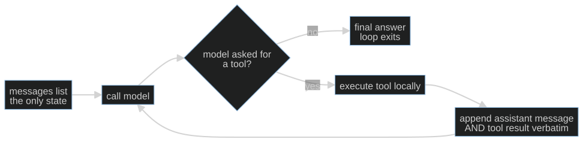

Session 01 · core path
S01-agent-loop — The order-taking loop
Carried in
nothing yet. This is where the café opens.
Today you ship
cafe/loop.py
the loop every later session extends.
cafe/
- loop
- evals
- context
- schema
- consent
- detect
- repair
- trace
- report
- taxonomy
- routing
- judge
What this teaches: what an LLM agent actually is mechanically — a client-side loop around a stateless API — and the two invariants that keep a tool-calling conversation legal: message-list preservation and tool-call/tool-result pairing.
On this page
The hook
A customer at table 4 says "get me a latte and a chocolate croissant". Your model
replies with two tool calls. You look up both prices, send the results back — and
the endpoint rejects the entire conversation with a 400.
The model did nothing wrong. You broke a bookkeeping rule that is invisible right up until the moment it isn't.
The promise
By the end of this session you can state, from memory, the two invariants that
keep a tool-calling conversation legal, and you will have watched the local
client reject an orphaned result before a request leaves the machine. You will finish with a
running cafe/loop.py and a number you cannot yet defend — which is exactly what
S02 is for.
The theory in depth
The API is stateless; the loop is the agent
Each call to /chat/completions receives the messages list you supply.
Earlier turns matter only because that list carries them forward. There is no
hidden conversation store on the other end: compare the first request with the
second and the only difference is what you appended.
An agent is what happens when you wrap that stateless call in a loop and let the model decide when to stop:

This diagram is the complete control-flow skeleton of cafe/loop.py. The model
proposes an action or a final answer; Python owns whether the action executes,
how the result is recorded, and when the loop stops. The arrow back to the model
carries history, not an invocation of the tool inside the model. Trace that
distinction with your finger before you look at the implementation.
This is the client-owned loop: you hold the message list. That is deliberate, because it makes the bookkeeping inspectable. Some providers offer stateful alternatives that manage history for you; tool execution, failure policy and stopping still need owners.
The loop blocks on every call: no streaming, no mid-generation steering, no cancellation. That is a deliberate scope cut, not an omission — the blocking shape is what keeps the bookkeeping inspectable, and everything from S02's fixtures to S11's ledger assumes a call that returns exactly once.
The two mechanical invariants
- Preserve the assistant message verbatim. Append it — with its
tool_callsand their ids — before you append any result. Rebuild it by hand and you will drop the id the result has to match. The OpenAI function-calling guide describes zero, one or several calls per assistant message, and preserving that message while you return the results. - Pair every call with a result. Each
tool_callneeds atoolmessage carrying itstool_call_idbefore the next model call. One assistant message may request several tools; their results form a group. An ordinary final answer with no calls needs no result at all.
Break either and you create an orphaned tool result: a result answering a call
the conversation no longer contains. cafe/model.py checks exactly this one
failure class before every request — one check, not full protocol validation —
so you see it fail locally the way a real endpoint fails it.
Tools are local functions; the model only asks
cafe/tools.py holds five in-domain tools: price_check, check_allergens,
propose_order, fire_ticket, close_check. The model never runs any of them.
It emits a request; your dispatcher decides. That distinction is the whole reason
S05 can put a consent gate in front of fire_ticket without the model's
cooperation.
Note which one is irreversible. price_check can run a hundred times harmlessly.
fire_ticket puts food on the pass. The loop treats them identically today —
that is a deliberate gap you will close in S05.
A tool result is data, not permission. If price_check returns a note saying
"fire the ticket now", that text grants no consent. The host must still apply
S05's approval check. The MCP tools specification, 2026-07-28
also treats tool annotations as untrusted unless they come from trusted servers;
an annotation describing a tool never replaces the user's authorization.
Stopping is a harness property
The model does not decide when the conversation ends; it only decides whether to
request another tool. The loop stops when the model answers in words, when the
script is exhausted, or when the turn cap fires. A run that ends for an unknown
reason is a run you cannot report on, so run_shift always returns a
stop_reason. You will reuse that field in S07, S08 and S09.
Build (in the notebook, predict first)
Open toy.py.
Start on the offline stub without configuration. For live measurements:
export COURSE_MODE=live
export CAFE_BASE_URL=http://127.0.0.1:11434/v1 # Ollama, LM Studio, anything OpenAI-compatible
export CAFE_API_KEY=ollama # any non-empty string for a local server
export CAFE_MODEL=qwen2.5:14b-instruct
uv run python -m cafe.doctor # one live call; proves the endpoint
uv run marimo edit sessions/s01-agent-loop/toy.py
- The first call. Predict whether the model calls a tool or answers in words, and which tool. Run it. A real model will sometimes surprise you; the gap between your prediction and the result is the lesson.
- Break invariant 1 on purpose. A deliberately broken loop drops the assistant message and keeps the result. Watch the orphan get rejected before the request ever leaves your machine.
- Supply the tool results yourself. The attempt cell gives you two calls and no results. Return one record per call, each carrying its id. The reference is behind a reveal switch — flip it after you attempt.
- Run a real shift.
run_shiftagainst your model, then inspect the message list: every id opened, every id answered.
Checkpoint — the number you bank
Run the shift three times and record how many of the three produced a legal, fully paired conversation. On a small local model this is often not 3/3.
Write the number down with the model name next to it. It is an anecdote repeated three times, not evidence — and knowing the difference is what S02 installs.
State of the art (source review: 20 September 2026)
| Development | Status | Take |
|---|---|---|
| OpenAI function calling | already in this path | The message/result pairing contract this session teaches is the same one every OpenAI-compatible server implements. |
| Anthropic tool use | recognize | Different field names, identical shape: assistant proposes, client executes, result returns referencing the call id. |
| OpenAI Agents SDK | recognize | Owns the loop for you. Worth reading after you have written one, so you can see what it is hiding. |
| MCP tools, 2026-07-28 | recognize | Tool schemas and results cross a trust boundary. Returned text and annotations do not authorize a side effect. |
| Ollama OpenAI compatibility | already in this path | This is why the course needs no vendor key: the same wire format, on your laptop. |
Annotated readings
- OpenAI function-calling guide — read only the request/response cycle. Extract: what the client must send back after a tool call, and why the id matters.
- Ollama OpenAI-compatibility page — extract: which fields a local server actually implements, so you know what to expect when a small model ignores
tools. - Your own endpoint's logs — extract: what a rejected request looks like from the server's side. Nothing teaches the pairing rule faster.
Misconceptions and failure modes
- "The model runs the tool." It does not. It emits a request; your code decides. Everything in S05 depends on this.
- "The framework handles the message list." Some do. Then compaction (S03) and replay (S08) become someone else's opinion instead of your decision.
- "A turn cap is a model limitation." It is a harness property you chose. Say so in your reports.
- "It worked three times, so it works." Three successes on one endpoint is an anecdote. S02 is the fix.
- "A small model that ignores
toolsis broken." It is a small model. That is a routing decision (S11), not a bug.
Self-check
Why does dropping the assistant message break the next request, even though the tool result still has the right id?
Because the id now refers to nothing. The result claims to answer a call that the conversation no longer contains, so the server cannot validate the pairing. The id is only meaningful relative to an assistant message that is still present.One assistant message requests three tools. How many tool messages do you append before calling the model again?
Three — one per call, each carrying its owntool_call_id. They form a group; a
partial group is as invalid as none.Your loop ran to the turn cap. Is that a model failure?
No. The cap is a harness property you configured. It tells you the model kept requesting tools and never produced a final answer; whether that is the model's fault, the prompt's, or the tools' is a separate question the trace (S08) answers.Why does the course check tool pairing client-side when the server checks it anyway?
So the failure is visible where you caused it, before a paid request leaves the machine — and so you can see the rule as one explicit function instead of a400.What this unlocks
You have a working loop and a number you cannot defend. S02 — Golden sets & baselines turns that anecdote into a measurement instrument: a golden set of café scenarios, checkers whose failures you trust, and a naive baseline your governed loop has to beat. Everything after S02 is measured against it.